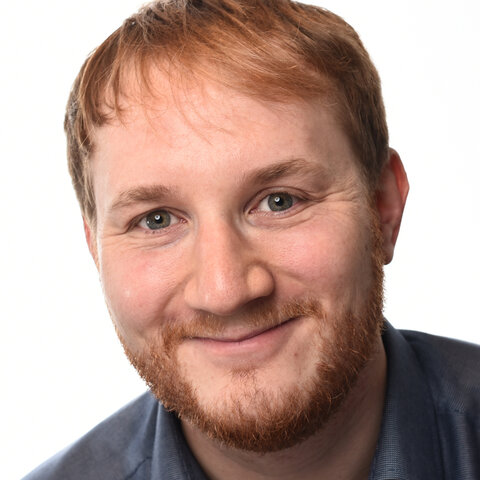

Machine learning for engineering, science, and healthcare. I advise on scientific feasibility, strategy, and technical execution, build the prototypes that show whether an idea holds, and help design research teams and select the people for them.
An independent scientific judgement on whether a machine learning approach can solve a given problem, what data it requires, and where the method will fail.
Research direction, method selection, and the sequence of experiments and infrastructure needed to get from a question to a deployed system.
Working prototypes developed on my own account: surrogate models, optimisation loops, and probabilistic models, documented so that a team can take them further.
Helping early-stage companies define research roles, assess candidates, and structure a machine learning team around the problem they actually have.
My work concerns physical systems, where data is expensive, simulations are slow, and a prediction without an honest uncertainty is of little use. Ten years of research and industrial practice in probabilistic machine learning inform how I approach these problems. More recently my research has moved to large language models, in particular post-training and the use of LLM judges and uncertainty quantification for evaluation.
Assessment of the relevance and applicability of machine learning to a specific scientific and technical application, including the state of the research literature and what it would take to adopt it.
Feasibility study for a clinical machine learning product developed with Charité Berlin, followed by a machine learning strategy and a growth plan for the research team.
Feasibility study with working prototypes for automated engineering design, and a machine learning roadmap covering methods, data, and compute.
Leading an LLM post-training research team.
Built and led a team of six for data, cloud, and machine learning. Defined the Physical AI and data strategy, established data-driven stellarator design using large-scale Pareto search, and published the largest public QI stellarator dataset with more than 300,000 designs.
First machine learning hire at a seed-stage company automating the design of electric motors; grew the group to five researchers and embedded image-based surrogates and Gaussian process optimisation into the simulation workflow.
Real-world machine learning. Established a collaboration with the British Antarctic Survey on emulation of ice-sheet models for extreme sea-level rise, leading to five publications.
Bayesian optimisation for gas turbine blade designs, saving more than 100 kilotonnes of CO₂ through efficiency gains, and reinforcement learning for gas and wind turbine controllers.
29 publications and patents in total. The full list is on Google Scholar.
Do get in touch. Tell me a little about the problem you are working on and we can have a chat about it.